Storyboard · La boucherie de Koffi
La boucherie de Koffi
Chaque plan du module, branches interactives comprises : images tirées de l’animation, direction visuelle, narration, textes à l’écran et interactions. Livrable 1, à valider avec les experts de l’ARAA.
Carte des embranchements
| Plan | Segment | Images | Direction visuelle (anglais) | Narration et sous-titres | Textes à l’écran |
|---|---|---|---|---|---|
| 1 | title 7s Version linéaire (WhatsApp) |
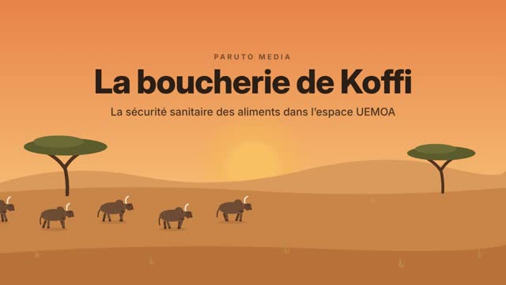 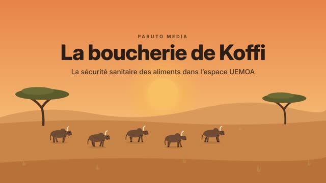 |
Dawn over the Sahel: sky gradient from #E7834A at the top to #F9D59C at the horizon, a large soft sun rising slowly, two flat acacia trees in dark olive silhouette, and five small dark-brown zebu cattle walking left to right along the horizon in a slow loop. From 0.8 s the title fades and slides up into the upper third: a small letter-spaced kicker "PARUTO MEDIA", the title "Koffi’s Butcher Shop" (very large, extra bold, #2B1E16) and the subtitle "Food safety rules in the WAEMU area" beneath it. | 0:01.2 La boucherie de Koffi : la sécurité sanitaire des aliments dans l’espace UEMOA. | — |
| 2 | meet 11s Version linéaire (WhatsApp) |
A busy city market: warm sky (#F2C584 to #FCEFD8), soft sand-coloured buildings with small windows in the background, a paved sand ground (#E7B77A). Market stalls have striped awnings with scalloped edges (terracotta and cream for meat stalls, teal and cream for vegetable stalls), wooden posts and a wooden counter. In the centre, Koffi's butcher stall: two cuts of meat hang from steel hooks at either side of the awning and cuts are laid on the counter. Koffi, a West African butcher: terracotta shirt, white apron, dark cap with a cream band, stands behind the counter facing left, working with a knife. Two customers walk in from the left (a woman in a yellow wrap dress with a terracotta head wrap, and a man in a light-blue shirt) and stop at the counter. At 1.4 s a cream speech-bubble name tag pops above Koffi: "Koffi · butcher". From 6.2 s Koffi hands a wrapped package of meat (marked with a small violet oval stamp) to the man. | 0:07.4 Voici Koffi, boucher au marché de la ville. 0:10.8 Sa viande vient d’éleveurs, passe par le marché à bétail et l’abattoir, avant d’arriver chez ses clients. |
— | |
| 3 | chain 15.6s Version linéaire (WhatsApp) |
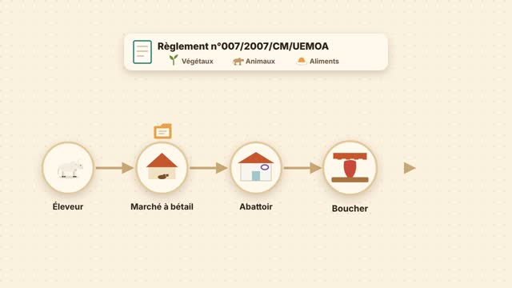 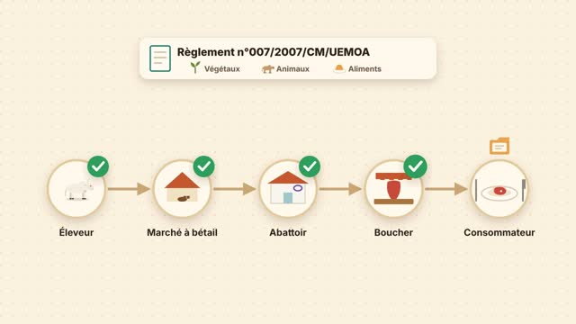 |
Cream board (#FBF1DF) with a fine dot pattern. At 0.3 s a cream card pops in at the top: a small document icon, the title "Regulation No. 007/2007/CM/UEMOA" and three small icons with labels "Plants" (a sprout), "Animals" (a cow), "Food" (a bowl). From 1.6 s five round cream nodes pop in from left to right along the middle, linked by sand-coloured arrows that draw on: "Herder" (a zebu), "Livestock market" (a terracotta market tent), "Abattoir" (a white building with a terracotta roof and a violet stamp), "Butcher" (a striped awning with hanging meat), "Consumer" (a plate with meat and cutlery). From 2.4 s a small orange folder travels from node to node, pausing at each. From 10.9 s a green check in a circle pops above each node in turn. | 0:18.3 Dans l’UEMOA, le Règlement n°007/2007/CM/UEMOA fixe des règles communes de sécurité sanitaire des végétaux, des animaux et des aliments. 0:28.6 Chaque opérateur du secteur alimentaire répond de la qualité sanitaire de ce qu’il vend. |
— |
| 4 | principles 26s Version linéaire (WhatsApp) |
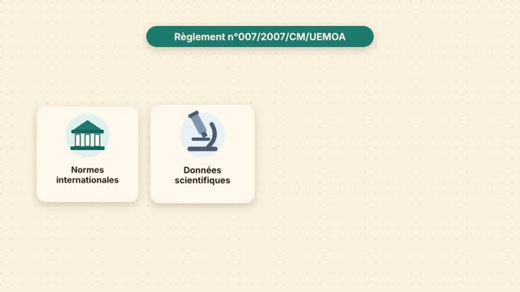 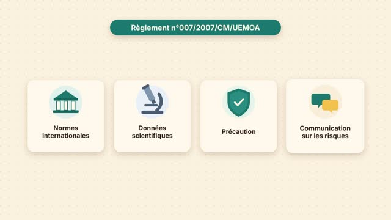 |
Cream board (#FBF1DF) with a fine dot pattern, no logos. At 0.3 s a teal pill pops at the top: "Regulation No. 007/2007/CM/UEMOA". Four cream cards (rounded corners, soft shadow, a pastel circle at the top holding an icon, a bold label under it) pop in a row at 0.6 s, 7.6 s, 14.0 s and 20.6 s: a small teal temple "International standards"; a microscope "Scientific data"; a green shield "Precaution"; two speech bubbles (teal and yellow) "Talking about risks". | 0:33.9 Le règlement repose sur des principes communs : les mesures suivent les normes internationales. 0:41.0 Les risques sont évalués sur des données scientifiques, et les mesures leur restent proportionnées. 0:47.4 Face à un risque de dommage grave, l’absence de certitude scientifique absolue n’est pas un prétexte pour attendre. 0:54.0 Et les risques sont expliqués aux consommateurs et aux professionnels. |
— |
| 5 | institutions 26s Version linéaire (WhatsApp) |
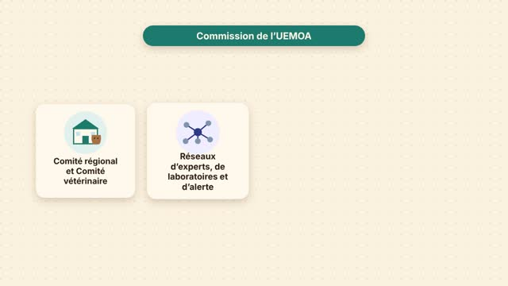 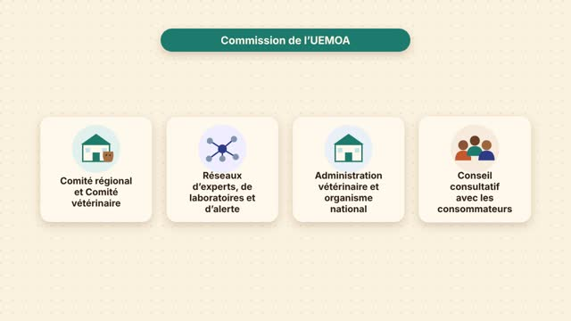 |
Cream board (#FBF1DF) with a fine dot pattern, no logos. At 0.3 s a teal pill pops at the top: "WAEMU Commission". Four cream cards (rounded corners, soft shadow, a pastel circle at the top holding an icon, a bold label under it) pop in a row at 0.6 s, 7.6 s, 14.0 s and 20.4 s: a teal-roofed office with a small cow head "Regional committee and Veterinary Committee"; an indigo network of linked dots "Networks of experts, labs and alerts"; a teal-roofed office building "Veterinary administration and national body"; three people side by side "Advisory council with consumers". | 0:59.9 Qui fait quoi ? Auprès de la Commission de l’UEMOA, un comité régional conseille, appuyé par le Comité vétérinaire. 1:07.0 Des réseaux d’experts, de laboratoires et d’alerte relient les États membres. 1:13.4 Chaque État a une administration vétérinaire et un organisme national de sécurité sanitaire des aliments, 1:19.8 ainsi qu’un conseil consultatif où siègent aussi les consommateurs. |
— |
| 6 | choice1 13.2s (pause) Version linéaire (WhatsApp) |
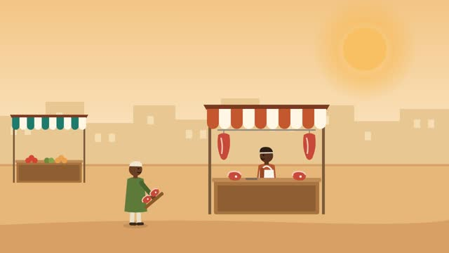 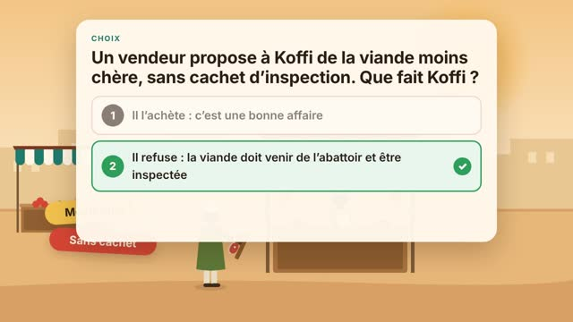 |
A busy city market: warm sky (#F2C584 to #FCEFD8), soft sand-coloured buildings with small windows in the background, a paved sand ground (#E7B77A). Market stalls have striped awnings with scalloped edges (terracotta and cream for meat stalls, teal and cream for vegetable stalls), wooden posts and a wooden counter. Koffi, a West African butcher: terracotta shirt, white apron, dark cap with a cream band, behind his counter facing left. A trader in a green boubou and cream cap walks in from the left (0–2.4 s) holding out a wooden tray with two cuts of meat, with no stamp on them. At 2.5 s a yellow pill "Cheaper!" pops near the tray, and at 3.1 s a red pill "No stamp". At 3.6 s a large cream card (rounded corners, soft shadow) slides down into the upper half: small teal uppercase label "Choice", the question in large bold text, then two option rows with numbered dark circles 1 and 2 (texts below). From 4.6 s show "Pause the video and choose: 1 or 2?" with a 3, 2, 1 countdown in an orange ring. At 7.8 s option 2 turns green with a white check in a green circle; option 1 dims to half opacity. | 1:25.9 Un vendeur propose à Koffi de la viande moins chère, sans cachet d’inspection. Que fait Koffi ? 1:33.6 Réponse 2 : on n’achète que de la viande inspectée, avec le cachet de l’abattoir. |
Un vendeur propose à Koffi de la viande moins chère, sans cachet d’inspection. Que fait Koffi ? 1. Il l’achète : c’est une bonne affaire 2. Il refuse : la viande doit venir de l’abattoir et être inspectée Interaction 1 → mauvaise réponse, blocked1 2 → bonne réponse, trace |
| 7 | blocked1 10.9s Version interactive seulement |
 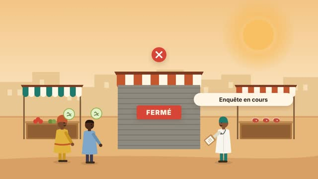 |
Branche : conséquence d’un mauvais choix, puis retour au choix. | +0.3s Cette viande n’a pas été inspectée. Des clients tombent malades. +4.4s Les services vétérinaires remontent jusqu’à Koffi : sa boutique est fermée le temps de l’enquête. |
— Interaction Branche : conséquence d’un mauvais choix, puis retour au choix. |
| 8 | trace 15.5s Version linéaire (WhatsApp) |
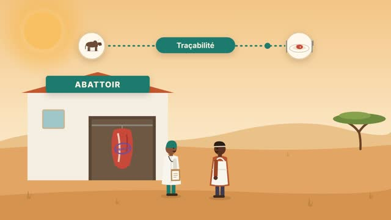 |
Outdoors at the edge of town (warm sky, sand hills, ochre ground, one acacia on the right, the sun at top left). On the left, an abattoir: white walls, terracotta roof, a teal sign reading "ABATTOIR", a window and a dark open doorway with a steel rail where a half carcass hangs. At 1.0 s a violet oval inspection stamp reading "INSPECTED" slams onto the carcass. A veterinarian (white coat, teal cap, clipboard) stands by the door. Koffi walks in from the right and stops facing left; at 2.8 s a wrapped package with the violet stamp passes from the veterinarian to Koffi. At 4.6 s a large open notebook pops in at the upper right: a teal spine with rings, the title "My purchases" and three rows "Date", "Supplier", "Origin"; blue handwriting draws on each row in turn (5.4 s, 6.9 s, 8.4 s). At 10.0 s the notebook shrinks away. From 10.6 s a traceability line appears across the top: a round icon with a zebu on the left, a round icon with a plate on the right, a dotted teal line between them with a teal dot travelling back and forth, and a teal pill "Traceability" in the middle. | 1:39.1 Koffi achète à l’abattoir une viande inspectée, avec son cachet. 1:43.4 Dans son cahier, il note chaque achat : la date, le fournisseur, l’origine des animaux. 1:49.2 C’est la traçabilité : savoir d’où vient un produit et où il va. |
— |
| 9 | duties 24s Version linéaire (WhatsApp) |
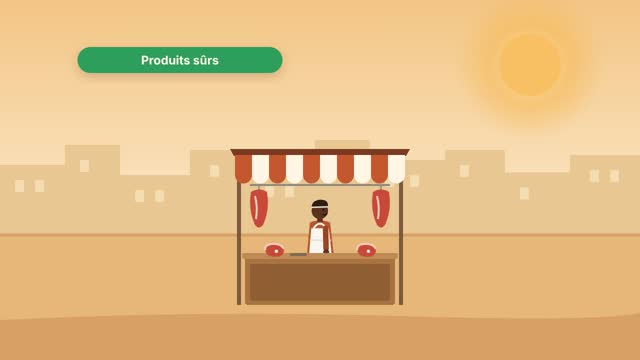 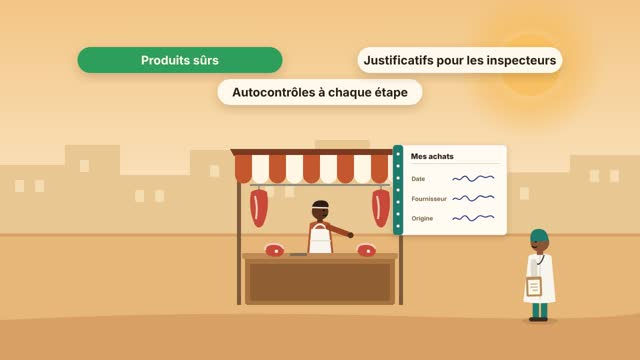 |
A busy city market: warm sky (#F2C584 to #FCEFD8), soft sand-coloured buildings with small windows in the background, a paved sand ground (#E7B77A). Market stalls have striped awnings with scalloped edges (terracotta and cream for meat stalls, teal and cream for vegetable stalls), wooden posts and a wooden counter. Koffi's butcher stall in the centre, Koffi, a West African butcher: terracotta shirt, white apron, dark cap with a cream band, standing behind the counter. Pills pop at the top: a green "Safe products" at the left at 0.6 s, a cream "Own checks at every stage" in the middle (a little lower) at 7.8 s, a cream "Records for inspectors" at the right at 15.8 s. From 15.6 s a veterinarian (white coat, teal cap) walks in from the right and stops; Koffi holds out his arm, and at 17.6 s his open purchase notebook (teal spine, rows filled in) pops up between them. | 1:54.6 La règle est claire : les opérateurs du secteur alimentaire répondent de ce qu’ils vendent, et ne vendent que des produits sûrs. 2:01.9 Chacun contrôle ses propres opérations, à toutes les étapes : production, transformation, stockage et distribution. 2:09.9 Et chacun doit pouvoir montrer aux inspecteurs ses autocontrôles et les informations commerciales sur ses denrées. |
— |
| 10 | alertArrive 6s Version linéaire (WhatsApp) |
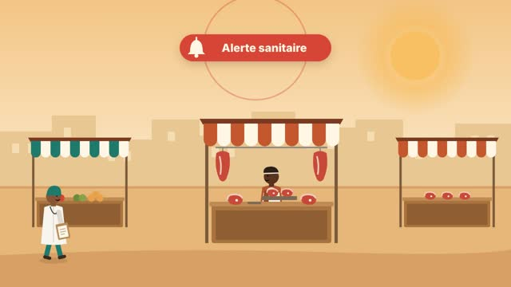 |
A busy city market: warm sky (#F2C584 to #FCEFD8), soft sand-coloured buildings with small windows in the background, a paved sand ground (#E7B77A). Market stalls have striped awnings with scalloped edges (terracotta and cream for meat stalls, teal and cream for vegetable stalls), wooden posts and a wooden counter. Three stalls in a row: vegetables on the left, Koffi's butcher stall in the centre (with a wooden tray holding two cuts of meat on the counter), another meat stall on the right. At 0.4 s a red pill with a white bell icon reading "Health alert" pops at the top centre, with a red ring pulsing outward from it. From 1.2 s a veterinarian in a white coat and teal cap walks in from the left and stops in front of the left stall. | 2:18.6 Un jour, les services vétérinaires lancent une alerte sur un lot de viande. | — |
| 11 | choice2 8s (pause) Version interactive seulement |
Carte de choix sur la scène figée ; la vidéo attend la réponse du spectateur. | +0.3s Comment Koffi aide-t-il les services ? | Comment Koffi aide-t-il les services ? 1. Il ne dit rien et continue de vendre 2. Il montre son cahier et retire la viande concernée Interaction 1 → mauvaise réponse, blocked2 2 → bonne réponse, alertResolve |
|
| 12 | blocked2 7.7s Version interactive seulement |
 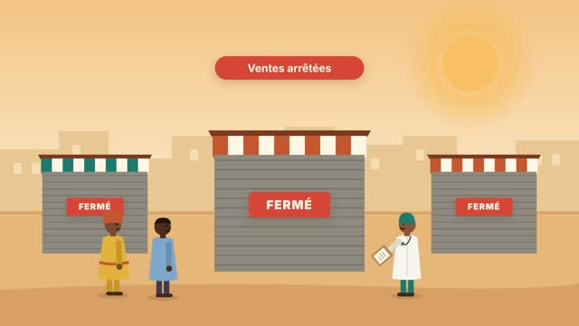 |
Branche : conséquence d’un mauvais choix, puis retour au choix. | +0.3s Sans information, les services ne retrouvent pas le lot. +3.8s Tout le marché est contrôlé et les ventes s’arrêtent. |
— Interaction Branche : conséquence d’un mauvais choix, puis retour au choix. |
| 13 | alertResolve 12.7s Version linéaire (WhatsApp) |
Continuing the market scene. At 0.3 s Koffi's notebook (same design, rows already written) pops up between Koffi and the veterinarian; Koffi holds it out. At 1.0 s a yellow highlighter sweeps across the "Supplier" row. At 1.8 s a red tag "Batch concerned" appears above the tray on Koffi's counter; from 2.6 s the tray lifts and moves off to the right and out of the market. At 3.4 s a teal pill "Batch withdrawn" pops; at 4.3 s a pale green pill "The market carries on" and green checks above the other two stalls. At 5.0 s the notebook fades. At 6.0 s a large cream panel slides in at the top titled "WAEMU member states", with eight teal dots on a gentle arc; red curved lines draw from one dot to each of the others in turn, and red rings pulse outward from the dots as the alert reaches them. No real map, country names or flags. | 2:24.5 Grâce au cahier, le lot est retrouvé et retiré. Le reste du marché continue. 2:30.3 Dans l’UEMOA, les États membres coopèrent et partagent les alertes pour protéger les consommateurs. |
— | |
| 14 | inform 24s Version linéaire (WhatsApp) |
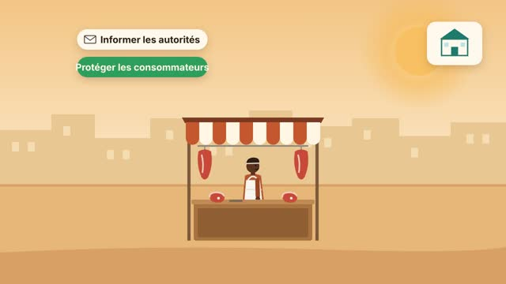 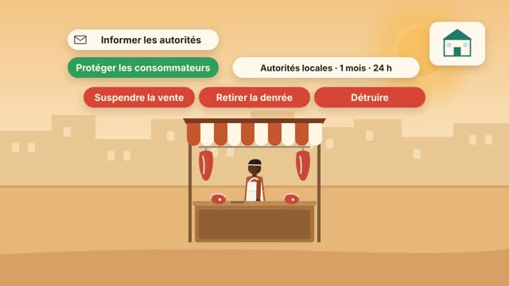 |
A busy city market: warm sky (#F2C584 to #FCEFD8), soft sand-coloured buildings with small windows in the background, a paved sand ground (#E7B77A). Market stalls have striped awnings with scalloped edges (terracotta and cream for meat stalls, teal and cream for vegetable stalls), wooden posts and a wooden counter. Koffi's stall in the centre, Koffi behind the counter, a veterinarian standing at the right edge. At 1.0 s a cream pill with an envelope icon pops at the upper left, "Inform the authorities"; at 1.4 s a small card with a teal-roofed office pops at the upper right and an envelope flies to it from Koffi (Koffi raises his arm). At 5.6 s a green pill "Protect consumers" pops under the first pill. From 9.8 s three red pills pop in a row across the upper middle, 1.6 s apart: "Suspend sales", "Withdraw the food", "Destroy it". At 16.8 s a cream pill "Local authorities · 1 month · 24 h" pops above them on the right. | 2:37.3 Si un opérateur pense qu’une denrée qu’il a vendue peut nuire à la santé, il doit informer les autorités et agir pour protéger les consommateurs. 2:46.4 En cas de danger grave, l’organisme national peut suspendre la vente, retirer la denrée ou la faire détruire. 2:53.4 En urgence, les autorités locales peuvent agir un mois au plus, en informant l’organisme national dans les 24 heures. |
— |
| 15 | notifiable 24s Version linéaire (WhatsApp) |
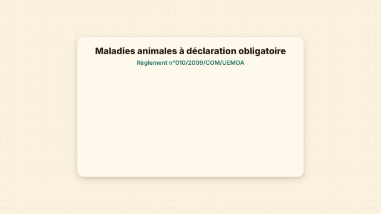 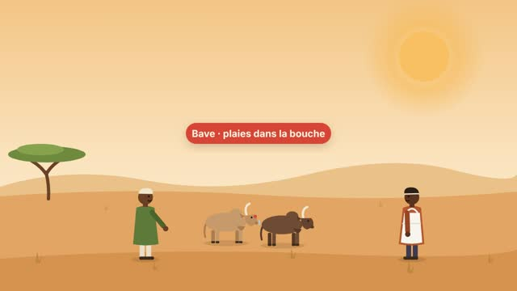 |
Cream board (#FBF1DF) with a fine dot pattern, no logos. At 0.4 s a large cream card pops in the middle with the title "Notifiable animal diseases" and a teal subtitle "Regulation n°010/2009/COM/UEMOA". From 7.8 s four lines with a red dot appear one by one (1.4 s apart): "Foot-and-mouth disease", "Contagious bovine pleuropneumonia", "Peste des petits ruminants", "Anthrax", and at 13.4 s a muted line "… and more than 120 others". At 15.2 s the board cross-fades to a savanna yard (warm sky, sand hills, ochre ground, an acacia on the left). From 15.6 s a herder (green boubou, cream cap) walks in from the left with two zebu cattle and stops in the middle, holding out his arm towards Koffi, who stands on the right. At 19 s light-blue drool and small red sores appear at the cattle's mouths, and at 18.6 s a red pill "Drooling · mouth sores" pops above them. | 3:01.3 En 2009, l’UEMOA a dressé la liste des maladies animales à déclaration obligatoire : plus de cent vingt. 3:08.6 Parmi elles : fièvre aphteuse, péripneumonie contagieuse bovine, peste des petits ruminants, fièvre charbonneuse. 3:16.6 Un matin, un éleveur propose à Koffi des bovins qui bavent, avec des plaies dans la bouche. |
— |
| 16 | choice3 13s (pause) Version linéaire (WhatsApp) |
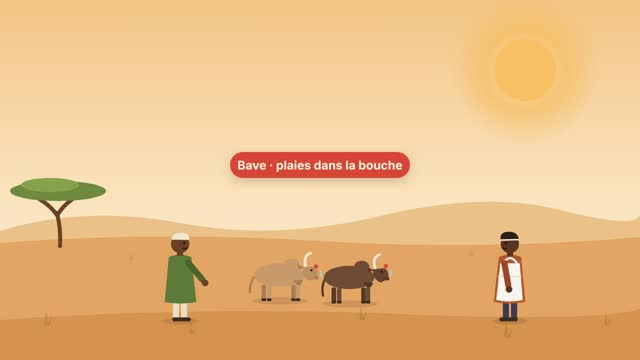 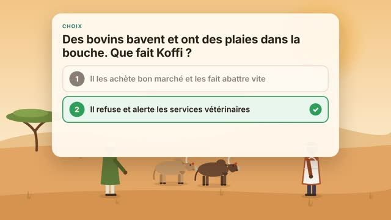 |
The yard from the previous shot, still: the herder, the two drooling cattle with the red pill, Koffi on the right. A large cream card (rounded corners, soft shadow) slides down into the upper half at 3.6 s: small teal uppercase label "Choice", the question in large bold text, then two option rows with numbered dark circles 1 and 2 (texts below). Show "Pause the video and choose: 1 or 2?" with a 3, 2, 1 countdown in an orange ring, then option 2 turns green with a white check in a green circle and option 1 dims to half opacity (at 4.6 s and 7.8 s, as in the first choice). | 3:25.3 Que fait Koffi ? 3:33.0 Réponse 2 : il refuse et alerte les services vétérinaires. |
Des bovins bavent et ont des plaies dans la bouche. Que fait Koffi ? 1. Il les achète bon marché et les fait abattre vite 2. Il refuse et alerte les services vétérinaires Interaction 1 → mauvaise réponse, blocked3 2 → bonne réponse, notifyGo |
| 17 | blocked3 10s Version interactive seulement |
 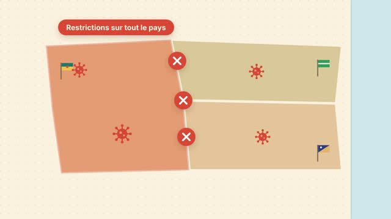 |
Branche : conséquence d’un mauvais choix, puis retour au choix. | +0.3s La maladie gagne d’autres troupeaux et d’autres marchés. +4.6s Les États voisins peuvent alors restreindre les animaux venant de tout le pays. |
— Interaction Branche : conséquence d’un mauvais choix, puis retour au choix. |
| 18 | notifyGo 24s Version linéaire (WhatsApp) |
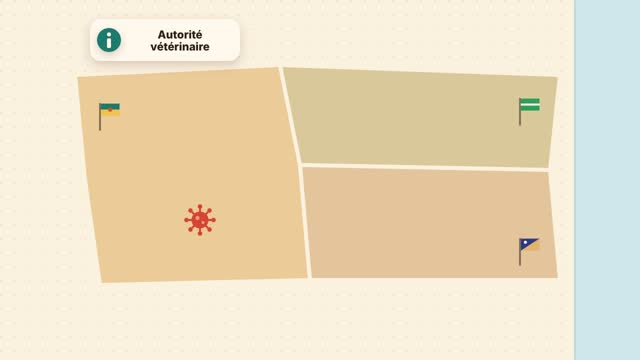 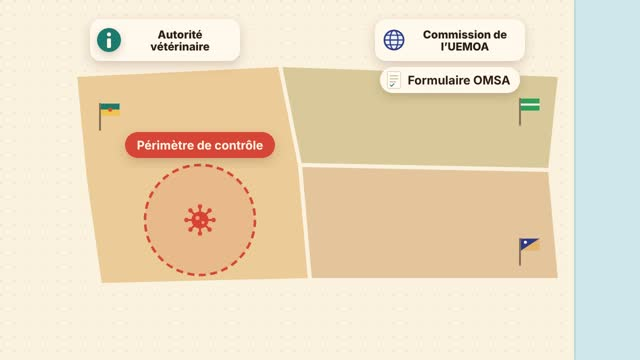 |
An invented map on a cream board (#FBF1DF) with a fine dot pattern, not a real map: three neighbouring countries drawn as soft angular shapes in sand tones separated by thick cream borders (a large one on the left, two on the right, one above the other), a pale-blue strip of sea with small white waves along the right edge, and a small plain two-colour flag on each country (invented, not any real flag). No country names. Koffi's country is the large one on the left. At 0.2 s a red virus icon pops at a farm in the left country. At 0.6 s a cream badge with an info icon pops at the upper left, "Veterinary authority", and an envelope flies to it from the farm. At 7.6 s a badge "WAEMU Commission" (globe icon) pops at the upper right and a document flies to it; at 9.6 s a cream pill with a document icon pops under it: "WOAH form". At 15.8 s a dashed red ring closes around the farm and a red pill "Control area" pops above it. | 3:38.3 Toute suspicion doit être portée immédiatement à la connaissance de l’autorité vétérinaire. 3:45.6 L’État notifie aussitôt la Commission de l’UEMOA, par écrit, sur le formulaire de l’OMSA. 3:53.6 Il déclare l’infection et applique des mesures dans un périmètre déterminé. |
— |
| 19 | crisis 18s Version linéaire (WhatsApp) |
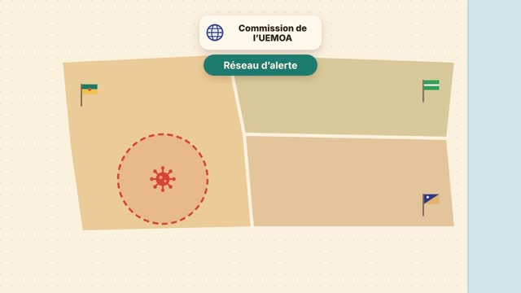 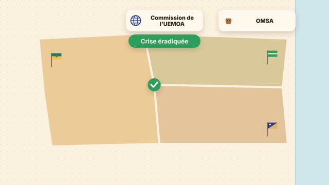 |
An invented map on a cream board (#FBF1DF) with a fine dot pattern, not a real map: three neighbouring countries drawn as soft angular shapes in sand tones separated by thick cream borders (a large one on the left, two on the right, one above the other), a pale-blue strip of sea with small white waves along the right edge, and a small plain two-colour flag on each country (invented, not any real flag). No country names. Koffi's country is the large one on the left. The farm with its virus icon and the dashed red ring. At 0.4 s the badge "WAEMU Commission" pops at the top centre with a teal pill "Alert network" under it, and from 1.0 s three envelopes fly from the farm to the badge and to the two other countries. At 7.8 s a cream pill "Safeguard measures" replaces the teal one and two red X marks pop on the border. At 9.6 s a badge "WOAH" (small cow head) pops at the upper right and an envelope flies to it. From 13.6 s the virus and ring fade, a green pill "Crisis eradicated" pops and the red X marks become green checks. | 4:02.3 En cas de crise sanitaire, les États préviennent aussitôt la Commission et les autres États par le réseau d’alerte. 4:09.6 Ils prennent des mesures de sauvegarde et informent l’OMSA quand il s’agit des animaux. 4:15.6 Les mesures prennent fin une fois la crise éradiquée. |
— |
| 20 | imports 24s Version linéaire (WhatsApp) |
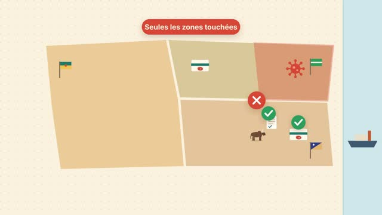 |
An invented map on a cream board (#FBF1DF) with a fine dot pattern, not a real map: three neighbouring countries drawn as soft angular shapes in sand tones separated by thick cream borders (a large one on the left, two on the right, one above the other), a pale-blue strip of sea with small white waves along the right edge, and a small plain two-colour flag on each country (invented, not any real flag). No country names. Koffi's country is the large one on the left. From 0.6 s a small cow with a document above it walks from the left country to the lower right one, with a cream pill "Veterinary certificate" at the top; a green check pops at 6.6 s. From 7.8 s a cargo ship sails up the sea strip on the right, and at 9.0 s the top pill becomes "Health certificate"; a crate of meat arcs from the ship to the shore and a green check pops at 12.8 s. At 15.6 s the right part of the upper right country turns red with a virus icon, a red X pops at its border and a red pill "Affected areas only" pops at the top; from 18 s a crate still travels from the unaffected part of that country to the left country, with a green check at 22.6 s. | 4:20.3 Les animaux envoyés vers un autre État membre voyagent avec un certificat vétérinaire délivré par un vétérinaire officiel. 4:27.6 La viande et les produits d’origine animale qui entrent dans l’Union ont un certificat de salubrité : animaux sains, hygiène respectée. 4:35.4 En cas d’épizootie, un État peut restreindre les animaux venant des seules parties du territoire touchées. |
— |
| 21 | market2 24s Version linéaire (WhatsApp) |
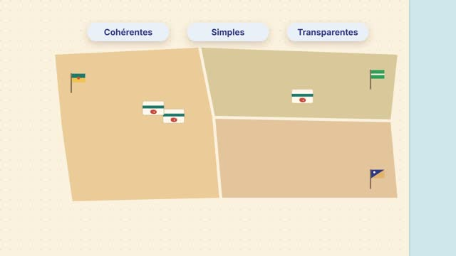 |
An invented map on a cream board (#FBF1DF) with a fine dot pattern, not a real map: three neighbouring countries drawn as soft angular shapes in sand tones separated by thick cream borders (a large one on the left, two on the right, one above the other), a pale-blue strip of sea with small white waves along the right edge, and a small plain two-colour flag on each country (invented, not any real flag). No country names. Koffi's country is the large one on the left. Three cream crates of meat travel continuously in arcs between the three countries. Pills at the top: a green "Free movement" at 0.8 s (until 7.4 s), then a cream "Sell in any member state" at 7.8 s (until 14.8 s), then three pale-blue pills in a row, 1.2 s apart from 15.2 s: "Coherent", "Simple", "Transparent". | 4:44.3 Les aliments et produits animaux conformes circulent librement dans l’Union. 4:51.6 Tout opérateur peut vendre dans un autre État membre les produits légalement commercialisés dans le sien. 4:59.0 Et les règles doivent rester cohérentes, simples et transparentes, sans entraves inutiles au commerce. |
— |
| 22 | rights 20s Version linéaire (WhatsApp) |
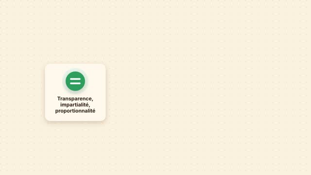 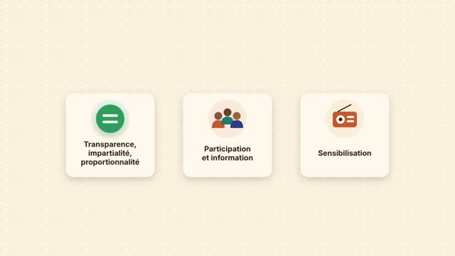 |
Cream board (#FBF1DF) with a fine dot pattern, no logos. Three cream cards (rounded corners, soft shadow, a pastel circle at the top holding an icon, a bold label under it) pop in a row at 0.6 s, 7.2 s and 13.8 s: a green equals sign "Transparency, impartiality, proportionality"; three people side by side "A say and information"; a terracotta radio "Awareness". | 5:08.3 Et quand la boutique de Koffi est contrôlée, il a droit à la transparence, à l’impartialité et à la proportionnalité. 5:15.0 Les États associent les acteurs aux décisions et les informent des risques et des mesures prises. 5:21.6 Les campagnes de sensibilisation, comme celle-ci, aident chacun à détecter et prévenir les risques sanitaires. |
— |
| 23 | quiz 72s Version linéaire (WhatsApp) |
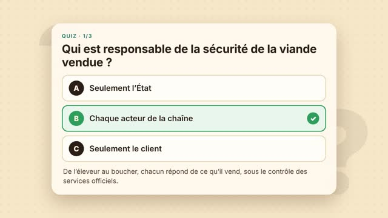 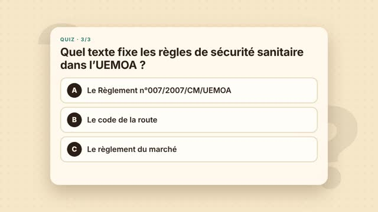 |
Warm cream background (#F7E7C9) with a dot pattern and two very large, faint, slowly rocking question marks. Six questions, 12 s each. Each fades in as a centred cream card: teal label "Quiz · 1/6" (2/6 and so on), the question in large bold text, and three option rows with dark lettered circles A, B, C. At 5.2 s into each question the correct option turns green with a white check, and a one-line explanation appears under the options. Each card fades out in its last 0.3 s. | Qui est responsable de la sécurité de la viande vendue ? … De l’éleveur au boucher, chacun répond de ce qu’il vend, sous le contrôle des services officiels. Que veut dire « traçabilité » ? … Elle permet de retrouver et de retirer vite un lot à risque. Quel texte fixe les règles de sécurité sanitaire dans l’UEMOA ? … Il couvre la sécurité sanitaire des végétaux, des animaux et des aliments. Une denrée vendue peut nuire à la santé. Que doit faire l’opérateur ? … Le règlement en fait une obligation pour chaque opérateur. On soupçonne la fièvre aphteuse. Qui prévenir ? … C’est une maladie à déclaration obligatoire. Qui siège au conseil consultatif de sécurité des aliments ? … Le conseil doit représenter les trois. |
1. Qui est responsable de la sécurité de la viande vendue ? A. Seulement l’État · B. Les opérateurs qui la vendent · C. Seulement le client 2. Que veut dire « traçabilité » ? A. Savoir d’où vient un produit et où il va · B. Vendre plus vite · C. Baisser les prix 3. Quel texte fixe les règles de sécurité sanitaire dans l’UEMOA ? A. Le Règlement n°007/2007/CM/UEMOA · B. Le code de la route · C. Le règlement du marché 4. Une denrée vendue peut nuire à la santé. Que doit faire l’opérateur ? A. Rien · B. Informer les autorités et protéger les consommateurs · C. Baisser son prix 5. On soupçonne la fièvre aphteuse. Qui prévenir ? A. Personne · B. Seulement les clients · C. L’autorité vétérinaire, immédiatement 6. Qui siège au conseil consultatif de sécurité des aliments ? A. Administrations, professionnels et consommateurs · B. Seulement le gouvernement · C. Seulement les bouchers Interaction 6 questions. Interactive : le spectateur répond, voit la correction et son score. Linéaire : la bonne réponse s’affiche après quelques secondes. |
| 24 | rules 10s Version linéaire (WhatsApp) |
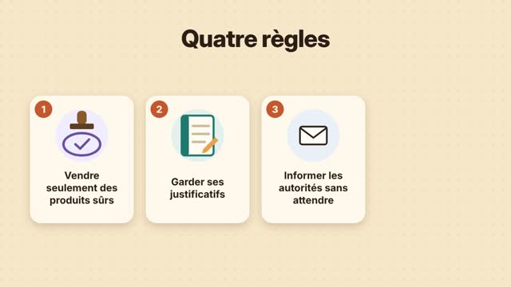 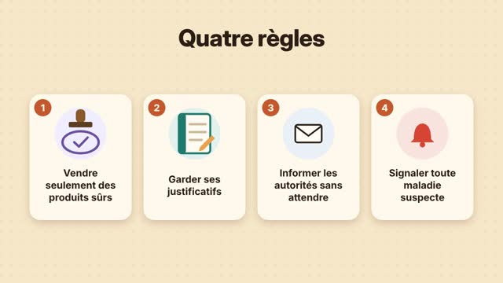 |
Warm cream background (#F7E7C9) with a dot pattern. The title "Four rules" fades in at the top. Four cream cards with soft shadows pop up in sequence (0.6 s, 1.4 s, 2.2 s, 3.0 s), each with a terracotta number badge (1 to 4), a pastel circle with an icon and a bold label: 1 a rubber stamp "Sell only safe products"; 2 a teal notebook "Keep your records"; 3 an envelope "Inform the authorities at once"; 4 a red bell "Report any suspected disease". | 6:40.3 Quatre règles : des produits sûrs, des justificatifs, l’information des autorités et le signalement des maladies. | — |
| 25 | recap 9s Version linéaire (WhatsApp) |
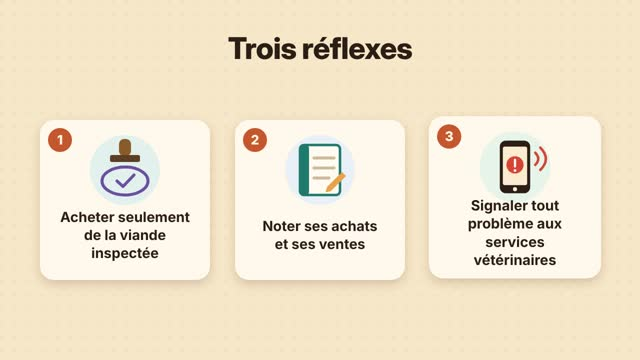 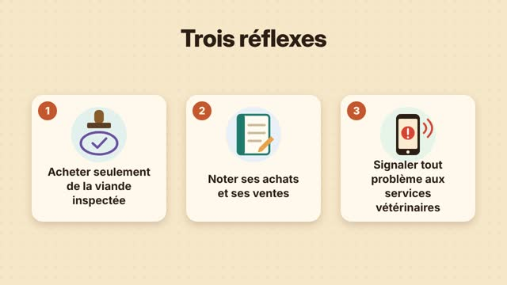 |
Same cream background. The title "Three habits" fades in at the top. Three cream cards with soft shadows pop up in sequence (0.6 s, 1.5 s, 2.4 s), each with a terracotta number badge (1, 2, 3), a pastel circle with an icon and a bold text of two to four lines: 1 a rubber stamp over a violet oval with a check, "Buy only inspected meat"; 2 a teal notebook with a pencil, "Record your purchases and sales"; 3 a phone showing a red alert with signal waves, "Report any problem to the veterinary services". | 6:50.3 Une chaîne sûre, du troupeau à l’assiette. | — |
| 26 | end 5s Version linéaire (WhatsApp) |
  |
Dark brown background (#1E1712). Fade in, centred: small letter-spaced "Produced by" in muted beige, the Paruto Media logo in white below it (use the uploaded paruto-media-logo-white.svg; if no file is uploaded, set "PARUTO MEDIA" in white, wide letter-spacing), then a small grey line: "Demonstration sample · content to be validated by technical experts". | — | — |
Storyboard · Koffi’s Butcher Shop
Koffi’s Butcher Shop
Every shot of the module, interactive branches included: frames taken from the animation, visual direction, narration, on-screen text and interactions. Deliverable 1, to be validated with ARAA’s experts.
Branching map
| Shot | Segment | Frames | Visual direction | Narration and captions | On-screen text |
|---|---|---|---|---|---|
| 1 | title 7s Linear version (WhatsApp) |
  |
Dawn over the Sahel: sky gradient from #E7834A at the top to #F9D59C at the horizon, a large soft sun rising slowly, two flat acacia trees in dark olive silhouette, and five small dark-brown zebu cattle walking left to right along the horizon in a slow loop. From 0.8 s the title fades and slides up into the upper third: a small letter-spaced kicker "PARUTO MEDIA", the title "Koffi’s Butcher Shop" (very large, extra bold, #2B1E16) and the subtitle "Food safety rules in the WAEMU area" beneath it. | 0:01.2 Koffi’s butcher shop: food safety rules in the WAEMU area. | — |
| 2 | meet 11s Linear version (WhatsApp) |
  |
A busy city market: warm sky (#F2C584 to #FCEFD8), soft sand-coloured buildings with small windows in the background, a paved sand ground (#E7B77A). Market stalls have striped awnings with scalloped edges (terracotta and cream for meat stalls, teal and cream for vegetable stalls), wooden posts and a wooden counter. In the centre, Koffi's butcher stall: two cuts of meat hang from steel hooks at either side of the awning and cuts are laid on the counter. Koffi, a West African butcher: terracotta shirt, white apron, dark cap with a cream band, stands behind the counter facing left, working with a knife. Two customers walk in from the left (a woman in a yellow wrap dress with a terracotta head wrap, and a man in a light-blue shirt) and stop at the counter. At 1.4 s a cream speech-bubble name tag pops above Koffi: "Koffi · butcher". From 6.2 s Koffi hands a wrapped package of meat (marked with a small violet oval stamp) to the man. | 0:07.4 This is Koffi, a butcher at the city market. 0:10.8 His meat comes from herders, passes through the livestock market and the abattoir, then reaches his customers. |
— |
| 3 | chain 15.6s Linear version (WhatsApp) |
  |
Cream board (#FBF1DF) with a fine dot pattern. At 0.3 s a cream card pops in at the top: a small document icon, the title "Regulation No. 007/2007/CM/UEMOA" and three small icons with labels "Plants" (a sprout), "Animals" (a cow), "Food" (a bowl). From 1.6 s five round cream nodes pop in from left to right along the middle, linked by sand-coloured arrows that draw on: "Herder" (a zebu), "Livestock market" (a terracotta market tent), "Abattoir" (a white building with a terracotta roof and a violet stamp), "Butcher" (a striped awning with hanging meat), "Consumer" (a plate with meat and cutlery). From 2.4 s a small orange folder travels from node to node, pausing at each. From 10.9 s a green check in a circle pops above each node in turn. | 0:18.3 In WAEMU, Regulation No. 007/2007/CM/UEMOA sets common rules for the safety of plants, animals and food. 0:28.6 Every food business in the chain answers for the safety of what it sells. |
— |
| 4 | principles 26s Linear version (WhatsApp) |
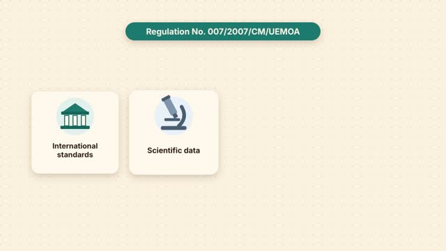 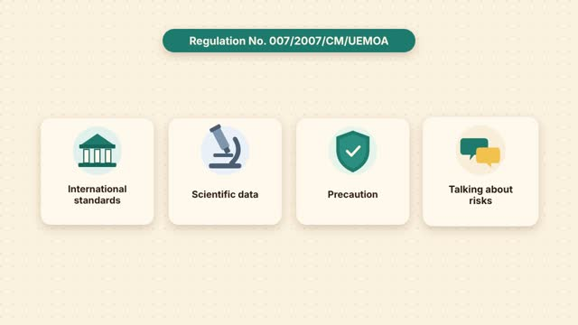 |
Cream board (#FBF1DF) with a fine dot pattern, no logos. At 0.3 s a teal pill pops at the top: "Regulation No. 007/2007/CM/UEMOA". Four cream cards (rounded corners, soft shadow, a pastel circle at the top holding an icon, a bold label under it) pop in a row at 0.6 s, 7.6 s, 14.0 s and 20.6 s: a small teal temple "International standards"; a microscope "Scientific data"; a green shield "Precaution"; two speech bubbles (teal and yellow) "Talking about risks". | 0:33.9 The regulation rests on common principles: measures follow international standards. 0:41.0 Risks are assessed on scientific data, and measures stay in proportion to them. 0:47.4 Faced with a risk of serious harm, a lack of full scientific certainty is no excuse to wait. 0:54.0 And risks are explained to consumers and professionals. |
— |
| 5 | institutions 26s Linear version (WhatsApp) |
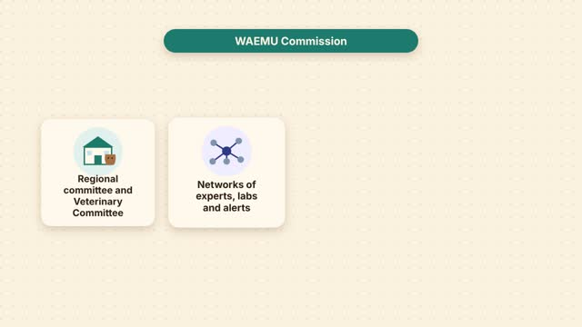 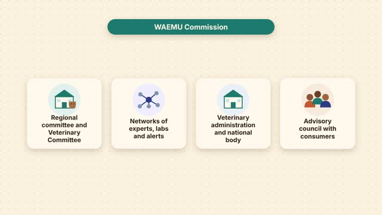 |
Cream board (#FBF1DF) with a fine dot pattern, no logos. At 0.3 s a teal pill pops at the top: "WAEMU Commission". Four cream cards (rounded corners, soft shadow, a pastel circle at the top holding an icon, a bold label under it) pop in a row at 0.6 s, 7.6 s, 14.0 s and 20.4 s: a teal-roofed office with a small cow head "Regional committee and Veterinary Committee"; an indigo network of linked dots "Networks of experts, labs and alerts"; a teal-roofed office building "Veterinary administration and national body"; three people side by side "Advisory council with consumers". | 0:59.9 Who does what? Under the WAEMU Commission, a regional committee advises, backed by the Veterinary Committee. 1:07.0 Networks of experts, laboratories and alerts link the member states. 1:13.4 Each state has a veterinary administration and a national food safety body, 1:19.8 and an advisory council where consumers also have a seat. |
— |
| 6 | choice1 13.2s (pause) Linear version (WhatsApp) |
  |
A busy city market: warm sky (#F2C584 to #FCEFD8), soft sand-coloured buildings with small windows in the background, a paved sand ground (#E7B77A). Market stalls have striped awnings with scalloped edges (terracotta and cream for meat stalls, teal and cream for vegetable stalls), wooden posts and a wooden counter. Koffi, a West African butcher: terracotta shirt, white apron, dark cap with a cream band, behind his counter facing left. A trader in a green boubou and cream cap walks in from the left (0–2.4 s) holding out a wooden tray with two cuts of meat, with no stamp on them. At 2.5 s a yellow pill "Cheaper!" pops near the tray, and at 3.1 s a red pill "No stamp". At 3.6 s a large cream card (rounded corners, soft shadow) slides down into the upper half: small teal uppercase label "Choice", the question in large bold text, then two option rows with numbered dark circles 1 and 2 (texts below). From 4.6 s show "Pause the video and choose: 1 or 2?" with a 3, 2, 1 countdown in an orange ring. At 7.8 s option 2 turns green with a white check in a green circle; option 1 dims to half opacity. | 1:25.9 A trader offers Koffi cheaper meat with no inspection stamp. What does Koffi do? 1:33.6 Answer 2: only buy inspected meat, with the abattoir stamp. |
A trader offers Koffi cheaper meat with no inspection stamp. What does Koffi do? 1. He buys it: it’s a good deal 2. He refuses: meat must come from the abattoir and be inspected Interaction 1 → wrong, blocked1 2 → correct, trace |
| 7 | blocked1 10.9s Interactive version only |
  |
Branch: the consequence of a wrong choice, then back to the choice. | +0.3s This meat was not inspected. Some customers fall ill. +4.4s The veterinary services trace it back to Koffi: his shop is closed during the investigation. |
— Interaction Branch: the consequence of a wrong choice, then back to the choice. |
| 8 | trace 15.5s Linear version (WhatsApp) |
  |
Outdoors at the edge of town (warm sky, sand hills, ochre ground, one acacia on the right, the sun at top left). On the left, an abattoir: white walls, terracotta roof, a teal sign reading "ABATTOIR", a window and a dark open doorway with a steel rail where a half carcass hangs. At 1.0 s a violet oval inspection stamp reading "INSPECTED" slams onto the carcass. A veterinarian (white coat, teal cap, clipboard) stands by the door. Koffi walks in from the right and stops facing left; at 2.8 s a wrapped package with the violet stamp passes from the veterinarian to Koffi. At 4.6 s a large open notebook pops in at the upper right: a teal spine with rings, the title "My purchases" and three rows "Date", "Supplier", "Origin"; blue handwriting draws on each row in turn (5.4 s, 6.9 s, 8.4 s). At 10.0 s the notebook shrinks away. From 10.6 s a traceability line appears across the top: a round icon with a zebu on the left, a round icon with a plate on the right, a dotted teal line between them with a teal dot travelling back and forth, and a teal pill "Traceability" in the middle. | 1:39.1 Koffi buys inspected meat at the abattoir, with its stamp. 1:43.4 In his notebook he records every purchase: the date, the supplier, where the animals came from. 1:49.2 That is traceability: knowing where a product comes from and where it goes. |
— |
| 9 | duties 24s Linear version (WhatsApp) |
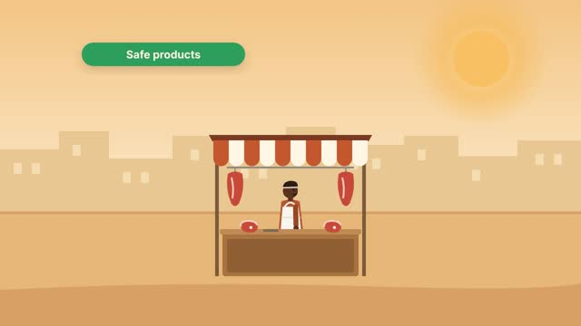 |
A busy city market: warm sky (#F2C584 to #FCEFD8), soft sand-coloured buildings with small windows in the background, a paved sand ground (#E7B77A). Market stalls have striped awnings with scalloped edges (terracotta and cream for meat stalls, teal and cream for vegetable stalls), wooden posts and a wooden counter. Koffi's butcher stall in the centre, Koffi, a West African butcher: terracotta shirt, white apron, dark cap with a cream band, standing behind the counter. Pills pop at the top: a green "Safe products" at the left at 0.6 s, a cream "Own checks at every stage" in the middle (a little lower) at 7.8 s, a cream "Records for inspectors" at the right at 15.8 s. From 15.6 s a veterinarian (white coat, teal cap) walks in from the right and stops; Koffi holds out his arm, and at 17.6 s his open purchase notebook (teal spine, rows filled in) pops up between them. | 1:54.6 The rule is clear: food businesses answer for what they sell, and sell only safe products. 2:01.9 Each one checks its own operations at every stage: production, processing, storage and distribution. 2:09.9 And each must be able to show inspectors its own checks and the trade records for its food. |
— |
| 10 | alertArrive 6s Linear version (WhatsApp) |
  |
A busy city market: warm sky (#F2C584 to #FCEFD8), soft sand-coloured buildings with small windows in the background, a paved sand ground (#E7B77A). Market stalls have striped awnings with scalloped edges (terracotta and cream for meat stalls, teal and cream for vegetable stalls), wooden posts and a wooden counter. Three stalls in a row: vegetables on the left, Koffi's butcher stall in the centre (with a wooden tray holding two cuts of meat on the counter), another meat stall on the right. At 0.4 s a red pill with a white bell icon reading "Health alert" pops at the top centre, with a red ring pulsing outward from it. From 1.2 s a veterinarian in a white coat and teal cap walks in from the left and stops in front of the left stall. | 2:18.6 One day, the veterinary services issue an alert about a batch of meat. | — |
| 11 | choice2 8s (pause) Interactive version only |
  |
Choice card over the frozen scene; the video waits for the viewer’s answer. | +0.3s How does Koffi help the services? | How does Koffi help the services? 1. He says nothing and keeps selling 2. He shows his notebook and withdraws the meat concerned Interaction 1 → wrong, blocked2 2 → correct, alertResolve |
| 12 | blocked2 7.7s Interactive version only |
  |
Branch: the consequence of a wrong choice, then back to the choice. | +0.3s Without information, the services cannot find the batch. +3.8s The whole market is checked and sales stop. |
— Interaction Branch: the consequence of a wrong choice, then back to the choice. |
| 13 | alertResolve 12.7s Linear version (WhatsApp) |
  |
Continuing the market scene. At 0.3 s Koffi's notebook (same design, rows already written) pops up between Koffi and the veterinarian; Koffi holds it out. At 1.0 s a yellow highlighter sweeps across the "Supplier" row. At 1.8 s a red tag "Batch concerned" appears above the tray on Koffi's counter; from 2.6 s the tray lifts and moves off to the right and out of the market. At 3.4 s a teal pill "Batch withdrawn" pops; at 4.3 s a pale green pill "The market carries on" and green checks above the other two stalls. At 5.0 s the notebook fades. At 6.0 s a large cream panel slides in at the top titled "WAEMU member states", with eight teal dots on a gentle arc; red curved lines draw from one dot to each of the others in turn, and red rings pulse outward from the dots as the alert reaches them. No real map, country names or flags. | 2:24.5 Thanks to the notebook, the batch is found and withdrawn. The rest of the market carries on. 2:30.3 In WAEMU, member states cooperate and share alerts to protect consumers. |
— |
| 14 | inform 24s Linear version (WhatsApp) |
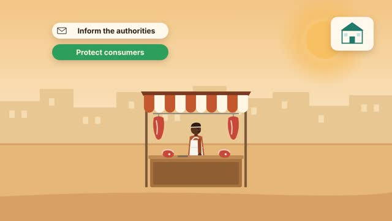 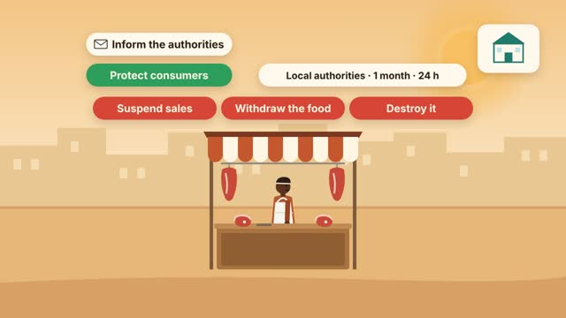 |
A busy city market: warm sky (#F2C584 to #FCEFD8), soft sand-coloured buildings with small windows in the background, a paved sand ground (#E7B77A). Market stalls have striped awnings with scalloped edges (terracotta and cream for meat stalls, teal and cream for vegetable stalls), wooden posts and a wooden counter. Koffi's stall in the centre, Koffi behind the counter, a veterinarian standing at the right edge. At 1.0 s a cream pill with an envelope icon pops at the upper left, "Inform the authorities"; at 1.4 s a small card with a teal-roofed office pops at the upper right and an envelope flies to it from Koffi (Koffi raises his arm). At 5.6 s a green pill "Protect consumers" pops under the first pill. From 9.8 s three red pills pop in a row across the upper middle, 1.6 s apart: "Suspend sales", "Withdraw the food", "Destroy it". At 16.8 s a cream pill "Local authorities · 1 month · 24 h" pops above them on the right. | 2:37.3 If a business thinks a food it has sold may harm health, it must inform the authorities and act to protect consumers. 2:46.4 In serious danger, the national food safety body can suspend sales, withdraw the food or have it destroyed. 2:53.4 In an emergency, local authorities can act for up to a month, informing that body within 24 hours. |
— |
| 15 | notifiable 24s Linear version (WhatsApp) |
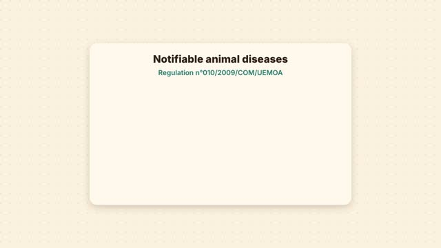 |
Cream board (#FBF1DF) with a fine dot pattern, no logos. At 0.4 s a large cream card pops in the middle with the title "Notifiable animal diseases" and a teal subtitle "Regulation n°010/2009/COM/UEMOA". From 7.8 s four lines with a red dot appear one by one (1.4 s apart): "Foot-and-mouth disease", "Contagious bovine pleuropneumonia", "Peste des petits ruminants", "Anthrax", and at 13.4 s a muted line "… and more than 120 others". At 15.2 s the board cross-fades to a savanna yard (warm sky, sand hills, ochre ground, an acacia on the left). From 15.6 s a herder (green boubou, cream cap) walks in from the left with two zebu cattle and stops in the middle, holding out his arm towards Koffi, who stands on the right. At 19 s light-blue drool and small red sores appear at the cattle's mouths, and at 18.6 s a red pill "Drooling · mouth sores" pops above them. | 3:01.3 In 2009, WAEMU listed the animal diseases that must be notified: more than one hundred and twenty. 3:08.6 Among them: foot-and-mouth disease, contagious bovine pleuropneumonia, peste des petits ruminants and anthrax. 3:16.6 One morning, a herder offers Koffi cattle that are drooling, with sores in their mouths. |
— |
| 16 | choice3 13s (pause) Linear version (WhatsApp) |
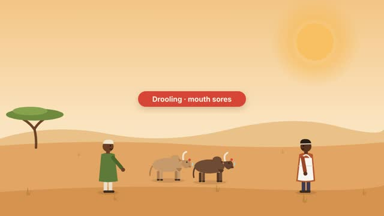 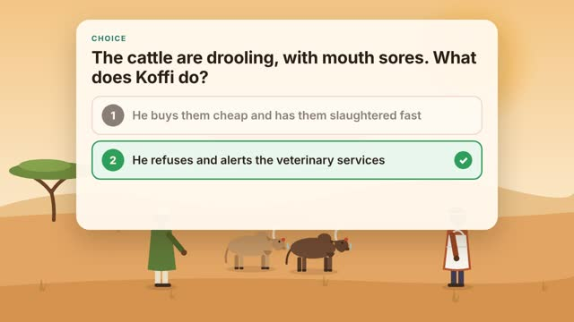 |
The yard from the previous shot, still: the herder, the two drooling cattle with the red pill, Koffi on the right. A large cream card (rounded corners, soft shadow) slides down into the upper half at 3.6 s: small teal uppercase label "Choice", the question in large bold text, then two option rows with numbered dark circles 1 and 2 (texts below). Show "Pause the video and choose: 1 or 2?" with a 3, 2, 1 countdown in an orange ring, then option 2 turns green with a white check in a green circle and option 1 dims to half opacity (at 4.6 s and 7.8 s, as in the first choice). | 3:25.3 What does Koffi do? 3:33.0 Answer 2: he refuses and alerts the veterinary services. |
The cattle are drooling, with mouth sores. What does Koffi do? 1. He buys them cheap and has them slaughtered fast 2. He refuses and alerts the veterinary services Interaction 1 → wrong, blocked3 2 → correct, notifyGo |
| 17 | blocked3 10s Interactive version only |
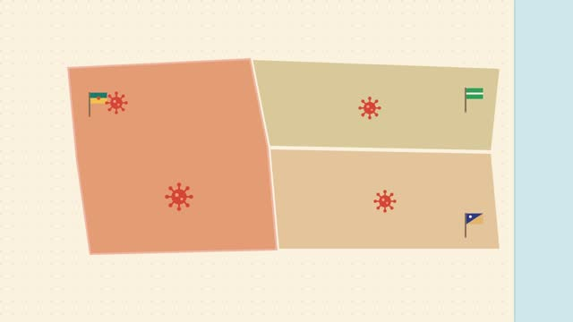 |
Branch: the consequence of a wrong choice, then back to the choice. | +0.3s The disease reaches other herds and other markets. +4.6s Neighbouring states can then restrict animals from the whole country. |
— Interaction Branch: the consequence of a wrong choice, then back to the choice. |
| 18 | notifyGo 24s Linear version (WhatsApp) |
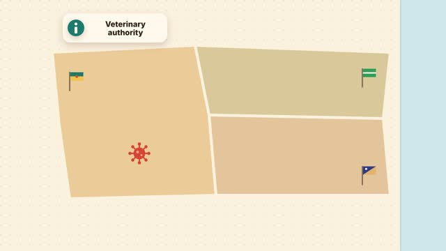 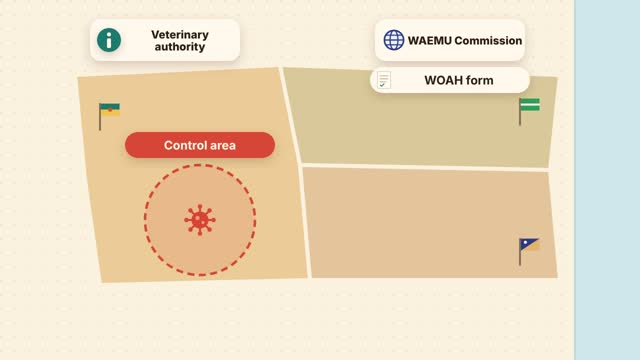 |
An invented map on a cream board (#FBF1DF) with a fine dot pattern, not a real map: three neighbouring countries drawn as soft angular shapes in sand tones separated by thick cream borders (a large one on the left, two on the right, one above the other), a pale-blue strip of sea with small white waves along the right edge, and a small plain two-colour flag on each country (invented, not any real flag). No country names. Koffi's country is the large one on the left. At 0.2 s a red virus icon pops at a farm in the left country. At 0.6 s a cream badge with an info icon pops at the upper left, "Veterinary authority", and an envelope flies to it from the farm. At 7.6 s a badge "WAEMU Commission" (globe icon) pops at the upper right and a document flies to it; at 9.6 s a cream pill with a document icon pops under it: "WOAH form". At 15.8 s a dashed red ring closes around the farm and a red pill "Control area" pops above it. | 3:38.3 Any suspicion must be brought to the veterinary authority at once. 3:45.6 The state notifies the WAEMU Commission immediately, in writing, on WOAH’s form. 3:53.6 It declares the infection and applies measures within a defined area. |
— |
| 19 | crisis 18s Linear version (WhatsApp) |
An invented map on a cream board (#FBF1DF) with a fine dot pattern, not a real map: three neighbouring countries drawn as soft angular shapes in sand tones separated by thick cream borders (a large one on the left, two on the right, one above the other), a pale-blue strip of sea with small white waves along the right edge, and a small plain two-colour flag on each country (invented, not any real flag). No country names. Koffi's country is the large one on the left. The farm with its virus icon and the dashed red ring. At 0.4 s the badge "WAEMU Commission" pops at the top centre with a teal pill "Alert network" under it, and from 1.0 s three envelopes fly from the farm to the badge and to the two other countries. At 7.8 s a cream pill "Safeguard measures" replaces the teal one and two red X marks pop on the border. At 9.6 s a badge "WOAH" (small cow head) pops at the upper right and an envelope flies to it. From 13.6 s the virus and ring fade, a green pill "Crisis eradicated" pops and the red X marks become green checks. | 4:02.3 In a health crisis, states warn the Commission and each other at once through the alert network. 4:09.6 They take safeguard measures, and inform WOAH when animals are affected. 4:15.6 The measures end once the crisis is eradicated. |
— | |
| 20 | imports 24s Linear version (WhatsApp) |
An invented map on a cream board (#FBF1DF) with a fine dot pattern, not a real map: three neighbouring countries drawn as soft angular shapes in sand tones separated by thick cream borders (a large one on the left, two on the right, one above the other), a pale-blue strip of sea with small white waves along the right edge, and a small plain two-colour flag on each country (invented, not any real flag). No country names. Koffi's country is the large one on the left. From 0.6 s a small cow with a document above it walks from the left country to the lower right one, with a cream pill "Veterinary certificate" at the top; a green check pops at 6.6 s. From 7.8 s a cargo ship sails up the sea strip on the right, and at 9.0 s the top pill becomes "Health certificate"; a crate of meat arcs from the ship to the shore and a green check pops at 12.8 s. At 15.6 s the right part of the upper right country turns red with a virus icon, a red X pops at its border and a red pill "Affected areas only" pops at the top; from 18 s a crate still travels from the unaffected part of that country to the left country, with a green check at 22.6 s. | 4:20.3 Animals sent to another member state travel with a veterinary certificate from an official veterinarian. 4:27.6 Meat and animal products entering the Union carry a health certificate: healthy animals, hygienic handling. 4:35.4 In an epizootic, a state can restrict animals from just the affected parts of another state. |
— | |
| 21 | market2 24s Linear version (WhatsApp) |
An invented map on a cream board (#FBF1DF) with a fine dot pattern, not a real map: three neighbouring countries drawn as soft angular shapes in sand tones separated by thick cream borders (a large one on the left, two on the right, one above the other), a pale-blue strip of sea with small white waves along the right edge, and a small plain two-colour flag on each country (invented, not any real flag). No country names. Koffi's country is the large one on the left. Three cream crates of meat travel continuously in arcs between the three countries. Pills at the top: a green "Free movement" at 0.8 s (until 7.4 s), then a cream "Sell in any member state" at 7.8 s (until 14.8 s), then three pale-blue pills in a row, 1.2 s apart from 15.2 s: "Coherent", "Simple", "Transparent". | 4:44.3 Food and animal products that meet the rules move freely across the Union. 4:51.6 Any business can sell in another member state the products it sells lawfully in its own. 4:59.0 And rules must stay coherent, simple and transparent, with no needless barriers to trade. |
— | |
| 22 | rights 20s Linear version (WhatsApp) |
Cream board (#FBF1DF) with a fine dot pattern, no logos. Three cream cards (rounded corners, soft shadow, a pastel circle at the top holding an icon, a bold label under it) pop in a row at 0.6 s, 7.2 s and 13.8 s: a green equals sign "Transparency, impartiality, proportionality"; three people side by side "A say and information"; a terracotta radio "Awareness". | 5:08.3 And when Koffi’s shop is inspected, he is entitled to transparency, impartiality and proportionality. 5:15.0 States give the people concerned a say and tell them about risks and the measures taken. 5:21.6 Awareness campaigns, like this one, help everyone detect and prevent health risks. |
— | |
| 23 | quiz 72s Linear version (WhatsApp) |
  |
Warm cream background (#F7E7C9) with a dot pattern and two very large, faint, slowly rocking question marks. Six questions, 12 s each. Each fades in as a centred cream card: teal label "Quiz · 1/6" (2/6 and so on), the question in large bold text, and three option rows with dark lettered circles A, B, C. At 5.2 s into each question the correct option turns green with a white check, and a one-line explanation appears under the options. Each card fades out in its last 0.3 s. | Who is responsible for the safety of the meat sold? … Each actor answers for what they sell, under official controls. What does “traceability” mean? … It makes it possible to find and withdraw a risky batch quickly. Which text sets the health safety rules in WAEMU? … It covers the safety of plants, animals and food. A food sold may harm health. What must the business do? … The regulation makes this a duty for every food business. Foot-and-mouth disease is suspected. Who must be told? … It is a notifiable disease. Who sits on the food safety advisory council? … The council must represent all three. |
1. Who is responsible for the safety of the meat sold? A. Only the State · B. The businesses that sell it · C. Only the customer 2. What does “traceability” mean? A. Knowing where a product comes from and where it goes · B. Selling faster · C. Cutting prices 3. Which text sets the health safety rules in WAEMU? A. Regulation No. 007/2007/CM/UEMOA · B. The highway code · C. The market by-laws 4. A food sold may harm health. What must the business do? A. Nothing · B. Inform the authorities and protect consumers · C. Lower its price 5. Foot-and-mouth disease is suspected. Who must be told? A. Nobody · B. Only the customers · C. The veterinary authority, at once 6. Who sits on the food safety advisory council? A. Officials, professionals and consumers · B. Only the government · C. Only the butchers Interaction 6 questions. Interactive: the viewer answers, sees the correction and a score. Linear: the right answer is revealed after a few seconds. |
| 24 | rules 10s Linear version (WhatsApp) |
Warm cream background (#F7E7C9) with a dot pattern. The title "Four rules" fades in at the top. Four cream cards with soft shadows pop up in sequence (0.6 s, 1.4 s, 2.2 s, 3.0 s), each with a terracotta number badge (1 to 4), a pastel circle with an icon and a bold label: 1 a rubber stamp "Sell only safe products"; 2 a teal notebook "Keep your records"; 3 an envelope "Inform the authorities at once"; 4 a red bell "Report any suspected disease". | 6:40.3 Four rules: safe products, good records, informing the authorities and reporting disease. | — | |
| 25 | recap 9s Linear version (WhatsApp) |
  |
Same cream background. The title "Three habits" fades in at the top. Three cream cards with soft shadows pop up in sequence (0.6 s, 1.5 s, 2.4 s), each with a terracotta number badge (1, 2, 3), a pastel circle with an icon and a bold text of two to four lines: 1 a rubber stamp over a violet oval with a check, "Buy only inspected meat"; 2 a teal notebook with a pencil, "Record your purchases and sales"; 3 a phone showing a red alert with signal waves, "Report any problem to the veterinary services". | 6:50.3 A safe chain, from herd to plate. | — |
| 26 | end 5s Linear version (WhatsApp) |
  |
Dark brown background (#1E1712). Fade in, centred: small letter-spaced "Produced by" in muted beige, the Paruto Media logo in white below it (use the uploaded paruto-media-logo-white.svg; if no file is uploaded, set "PARUTO MEDIA" in white, wide letter-spacing), then a small grey line: "Demonstration sample · content to be validated by technical experts". | — | — |